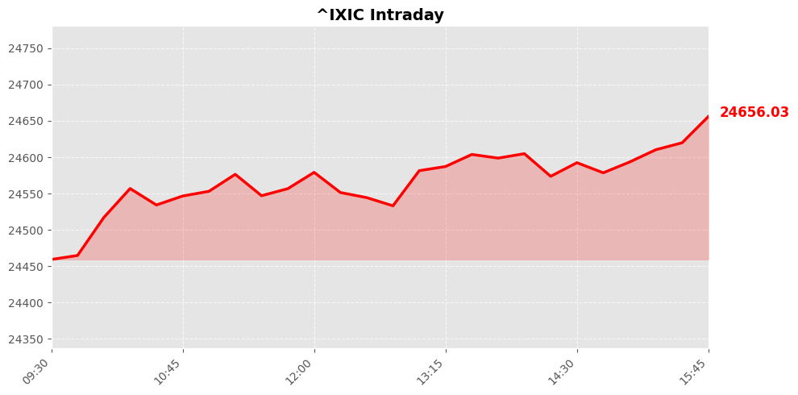
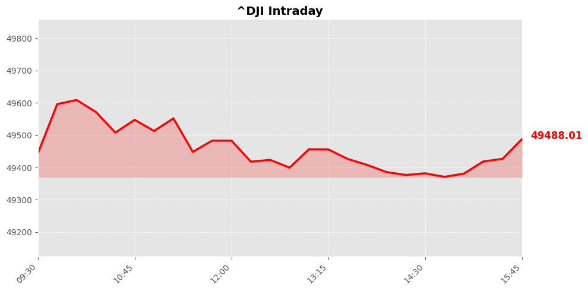
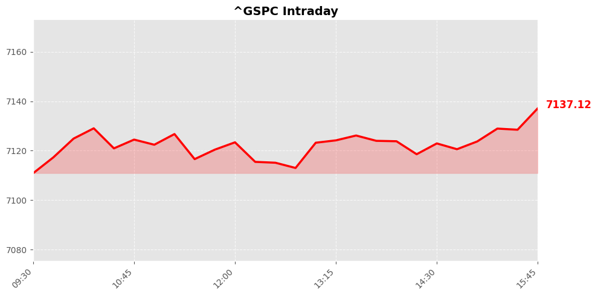

Daily Market Briefing
Market Overview



Market Analysis
The recent trading session exhibits a robust positive momentum across the major U.S. stock indices, reflecting a generally optimistic market sentiment. The NASDAQ Composite surged by approximately 1.64%, reaching 24,657.57 points, driven primarily by strong performances in technology and growth-oriented stocks. This upward trend suggests investor confidence in the sector’s growth prospects, possibly fueled by favorable earnings reports, technological innovations, or macroeconomic indicators indicating resilience.
Meanwhile, the Dow Jones Industrial Average increased by 0.69%, closing at 49,490.03 points. The Dow’s gains, though more modest relative to the NASDAQ, highlight continued strength in industrials, financials, and other traditional sectors, signaling broad-based confidence across diverse industries. The S&P 500, the broadest measure of U.S. equities, rose by 1.05% to 7,137.9, underscoring a balanced optimism that encompasses both growth stocks and value sectors.
This rally may be attributed to several factors. Positive macroeconomic data, such as employment figures, consumer spending, or easing inflationary pressures, likely contributed to boosting investor confidence. Additionally, expectations of continued monetary support from the Federal Reserve and optimism regarding corporate earnings prospects could be underpinning this rally. The market’s positive trajectory suggests that investors are currently favoring risk assets, possibly anticipating ongoing economic recovery and technological advancements.
Overall, the market displays a strong bullish trend, reflecting a cautiously optimistic outlook. While uncertainties persist, particularly around geopolitical or macroeconomic risks, the current momentum suggests that investors remain confident in the resilience and growth potential of the U.S. economy.
Today's Headlines
News Analysis
Market Focus Points Today:
-
Record Market Close Driven by Geopolitical and Earnings News:
The S&P 500 and Nasdaq indices closed at new all-time highs, buoyed by positive sentiment surrounding the Iran ceasefire extension and strong corporate earnings reports. The extension of the Iran ceasefire alleviates geopolitical tensions, fostering a more stable environment for equities, especially in sectors sensitive to geopolitical risks like energy and defense. -
Geopolitical Tensions in the Persian Gulf Persist:
Despite the ceasefire extension, Iran's aggressive actions—such as seizing two container ships and the ongoing maritime tensions—continue to introduce geopolitical uncertainty. These events influence oil prices and shipping costs, with potential ripple effects on global supply chains and inflationary pressures. -
Corporate Leadership and Innovation Announcements:
Major moves in corporate leadership, exemplified by Lululemon's appointment of a former Nike executive as CEO, signal strategic shifts that could impact company performance and investor confidence. Additionally, IBM's CEO comments highlight ongoing challenges in AI development and competition, relevant to the tech sector's growth trajectory. -
Rescue Operations and Industry Costs:
The US nearing a $500 million rescue for Spirit Airlines, amid Iran-induced fuel shocks, underscores how geopolitical events are influencing airline operations and costs. Increased fuel prices, driven by Middle Eastern tensions, threaten margins in the transportation sector. -
Electric Vehicle (EV) Industry Progress:
Rivian’s milestone in starting production of the R2 EV model signifies ongoing innovation and capacity expansion within the EV industry, aligning with broader trends toward electrification and sustainable transportation.
Potential Market Impact Factors:
-
Geopolitical Stability and Oil Prices:
Iran’s aggressive maritime actions and the extension of the ceasefire can influence crude oil markets. Stable ceasefire conditions may keep oil prices subdued, supporting equities, whereas escalations could lead to volatility, particularly in energy stocks. -
Economic and Corporate Earnings Outlook:
Continued robust earnings reports, coupled with strategic leadership changes, are expected to bolster investor confidence. However, geopolitical uncertainties and inflationary pressures—exacerbated by rising fuel costs—could temper optimism. -
Technological Innovation and Competition:
The AI sector remains highly competitive, with developments like Anthropic's Mythos AI model and IBM's strategic outlook influencing tech valuations. The AI data center boom, as noted by market commentators, could benefit related hardware and infrastructure stocks. -
Policy and Diplomatic Developments:
US-Iran negotiations and the White House’s call for a unified response may impact regional stability and sanctions policies. Any breakthrough or escalation can significantly influence market sentiment, especially in energy and defense sectors.
Industry Trends Worth Noting:
-
Artificial Intelligence and Data Center Expansion:
The AI sector continues to evolve rapidly, with significant investments in data center infrastructure to support AI workloads. Companies involved in AI hardware, cloud services, and software are positioned to benefit from this growth. -
Electrification and Sustainable Transportation:
The EV industry is gaining momentum, with new production milestones from companies like Rivian indicating increased capacity and innovation. This aligns with the global push toward sustainability, regulatory support, and consumer adoption. -
Geopolitical Risks and Supply Chain Resilience:
Tensions in the Middle East and related shipping disruptions highlight ongoing vulnerabilities in global supply chains. Companies are increasingly focusing on diversification and resilience strategies amid these risks. -
Corporate Leadership and Strategic Realignments:
High-profile leadership changes, like at Lululemon, reflect broader industry trends toward strategic pivots and innovation-driven growth, which could influence stock performance and investor sentiment.
In summary, today's market reflects a cautiously optimistic outlook, driven by geopolitical easing but tempered by persistent tensions and inflationary pressures. The ongoing evolution in AI and EV sectors offers promising growth avenues, while geopolitical risks remain critical factors to monitor.
Economic Indicators
Inflation Indicators
Employment Indicators
Consumer Indicators
Community Hot Stocks
| Rank | Symbol | Mentions | Source |
|---|---|---|---|
| 1 | TSLA | 112 | |
| 2 | MSFT | 76 | |
| 3 | PUMP | 63 | |
| 4 | NVDA | 58 | |
| 5 | BEAT | 56 | |
| 6 | VS | 55 | |
| 7 | LOAN | 47 | |
| 8 | NET | 45 | |
| 9 | HIT | 42 | |
| 10 | FACT | 39 | |
| 11 | MU | 36 | |
| 12 | EDIT | 34 | |
| 13 | SAFE | 31 | |
| 14 | CARE | 31 | |
| 15 | FAST | 31 | |
| 16 | LAW | 30 | |
| 17 | LUCK | 30 | |
| 18 | WTF | 28 | |
| 19 | AMD | 27 | |
| 20 | WOW | 26 |
Market Outlook
The recent surge in major U.S. stock indices—NASDAQ (+1.64%), S&P 500 (+1.05%), and Dow Jones (+0.69%)—indicates a bullish sentiment driven by positive developments such as the extension of the Iran ceasefire and robust corporate earnings reports. The NASDAQ's record close suggests strong investor confidence in technology and growth sectors, while the broader market gains reflect optimism about the global geopolitical environment stabilizing somewhat.
However, underlying risks remain. The ongoing geopolitical tensions in the Gulf, exemplified by Iran seizing ships and the U.S. military rescue efforts, introduce volatility that could influence market stability in the short term. Additionally, corporate outlooks, notably IBM's caution regarding Iran-related uncertainties, highlight potential headwinds in certain sectors impacted by geopolitical and macroeconomic factors.
In terms of market direction, the immediate outlook appears cautiously optimistic, with momentum likely to persist over the next trading days given the positive earnings season and geopolitical easing. Nonetheless, investors should stay vigilant for potential volatility spikes stemming from geopolitical developments or macroeconomic data releases.
Key points for investors include monitoring geopolitical tensions in the Gulf and their impact on energy and shipping sectors, staying updated on corporate earnings guidance especially from tech and industrial firms, and assessing macroeconomic indicators that could influence risk appetite. Diversification and risk management strategies remain essential amid the ongoing geopolitical uncertainties, even as market sentiment currently remains bullish.
Follow Us

Scan to follow StockGate
For more US stock market insights